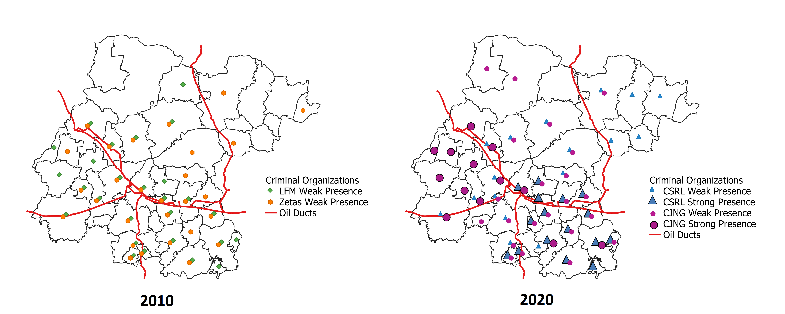
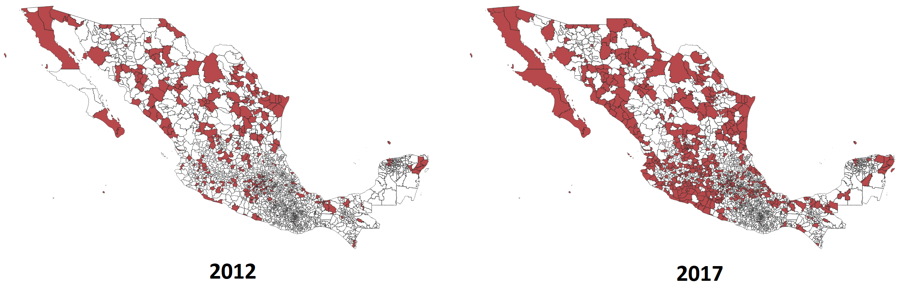

Mapping Criminal Organizations
Mapping Criminal Organizations in Mexico (MCO) (www.mexicocrimemaps.org) is an original effort to generate comprehensive information about criminal operations in Mexico. The project combines qualitative and automated methods, drawing from multiple sources, to produce a series of systematic datasets on the presence, structure, evolution, and relationships of criminal groups in Mexico. Our online platform contains maps and other visuals and provides free access to the data, its codebooks, and methodology documents.
This project is supported by the Center for U.S.–Mexican Studies at UCSD’s School of Global Policy and Strategy, the Empirical Studies of Conflict Project, and the Data-Driven Social Science Initiative at Princeton Univeersity. It has also received funding from the Mamdouha S. Bobst Center for Peace and Justice at Princeton University.
Team
- Marco Alcocer, UC San Diego and ITAM, Co-founder and lead investigator.
- Fernanda Sobrino, University of Chicago, Machine Learning Expert.
- Cecilia Farfán Méndez, Center for U.S.-Mexican Studies, Field data collection expert.
- Patrick Signoret, Co-founder.
Current data projects include:
- "Mapping Criminal Organizations in Mexico: State Panel 2007-2015", https://doi.org/10.7910/DVN/N0KGCZ, Harvard Dataverse, V1.
- In the media: El Financiero, Mexico Today (by Reforma), IMER Noticias, Al Calor Politico, Cuestione
- "Mapping Criminal Organizations in Guanajuato" 
- "Mapping Criminal Organizations in Mexico: Municipal Panel 2000-2018" 
- "Mapping Criminal Organizations in Mexico: Group Histories and Fragmentation"

- Dyad data on relationships between criminal groups (allied, enemy, neutral)